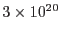
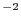
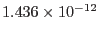
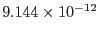
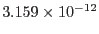

The task produces four output files:
The first three of these are source lists produced directly by the task emldetect. The OMSSLI0000 file contains detections in all bands ordered by Right Ascension combined to give one detection per band per row.
Count rates are converted to fluxes using hard-coded factors based upon
a power-law spectrum of slope 1.7, absorbed by a Galactic column of
 cm. These values are 1 c/s =
,
,
 ergs s cm
for the soft, hard and total bands respectively.
cm
for the soft, hard and total bands respectively.